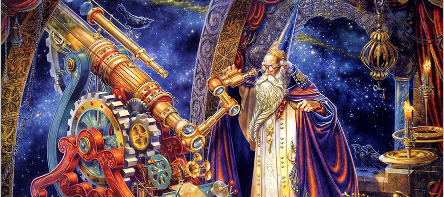

Los astros siempre han sido objeto de observación y estudio para el ser humano. Aztecas, chinos, hindúes y otras civilizaciones como la mesopotámica, y pueblos como los griegos y los árabes registraron a lo largo de la historia diversos eventos celestes, como eclipses solares y lunares y efectuaron medidas de los astros y de sus órbitas principalmente con el objetivo de mantener calendarios precisos. Los dos mayores astrónomos de la Antigüedad fueron Hiparco de Nicea y Ptolomeo. Estas primeras observaciones astronómicas se hacían totalmente a simple vista y, por lo tanto, eran limitadas. La invención del telescopio dio un gran impulso a la observación del cielo.
El telescopio tiene un origen controvertido, siendo su invención generalmente atribuida a Hans Lippershey, un fabricante de lentes neerlandés, en 1608. En 1609, el astrónomo italiano Galileo Galilei presentó uno de los primeros telescopios registrados por la historia (una "luneta") y de él obtuvo diversas observaciones astronómicas que lo llevaron a proponer el sistema heliocéntrico. Las observaciones de Galileo incluyeron el descubrimiento de las manchas solares, del relieve lunar y de los satélites de Júpiter, entre otros importantes descubrimientos.